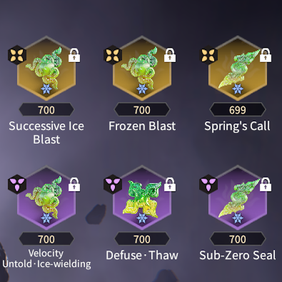

Potential Plans
The way you design your Potential Plans will be the backbone of your playstyle. This page will show you a variety of viable Potential Plans you can work with and where they are most effective.
Video Introduction
Blazing Flame
This Potential Path focuses on the left Green side.
It increases the damage of your Burns by 55% at base, that scales with any Health % bonuses that you have, including the 20% from hero levels.
Furthermore, it makes your Divine Thunder (excluding Thunder Counter) apply a decent Burn alongside boosting your martial skills Aegis-Break and Defuse.
Recommended Heroes: All
Martial Skill Variant

Focuses on spamming your Aegis-Break for damage output and procing Divine Thunder on enemies,
which then apply a Burn for further increased Honed Duration.
Can also be used for Thunder-focused Builds.
Recommended Heroes: Viper Ning, Tianhai, Kurumi, Valda Cui, & Wuchen
Self Burn Variant

Synergizes with the Incineration + Ember Souljades in that it makes Self-Burns non-lethal
while also granting Honed Status from them alongside successful Defuses.
Recommended Heroes: Feria Shen, Tianhai, Temulch, Tarka Ji, Yueshan, & Matari
Stormstride Sword Variant
For heroes who have lots of hits on their Defuse Counterattacks (and martial skills) that can make great use of Stormstride Sword.
Grants additional Honed Status duration for every 5 Thunderbolts landed.
Recommended Heroes: Feria Shen, Tianhai, Tarka Ji, & Wuchen
Ice Blast
This Potential Path focuses on maximizing damage output from Ice Blasts.
Ice builds no longer have a dedicated section for them, however, you can still boost your frostbite accumulation rate from two glyphs:
Flame-Thunder Chant and Frost Douse.
However, it does struggle with maintaining Honed Status.
Recommended Heroes: Viper Ning, Feria Shen, Tianhai, Temulch, Kurumi, Valda Cui, Matari, & Wuchen
Divine Aegis-Break Variant

For heroes who still benefit greatly from Honed Rage (Honed Tyranny replacement) to deal great DPS with their
martial skill Aegis-Break.
Recommended Heroes: Viper Ning, Tianhai, Kurumi, Valda Cui, & Wuchen
Divine Defuse Variant

Alternate path giving increased Honed Duration from successful Defuses, better for those who don't benefit particularly from Honed Rage.
Recommended Heroes: Feria Shen, Temulch, & Matari
Divine Storm
This Potential Path primarily emphasizes the Divine Storm glyph, which is located in the middle Red section.
This path greatly increases your Thunderbolt damage and can stack Honed Status quickly the more Thunderbolts you can summon.
Recommended Heroes: Feria Shen, Tarka Ji, Kurumi, Matari, & Wuchen
Thunderous Power Variant
Completely focuses on Thunderbolt based damage output. Great for heroes who can use multiple Thunderbolt Souljades effectively.
Recommended Heroes: Feria Shen, Tarka Ji, Kurumi, & Matari
Honed Rage Variant

Combines Thunderbolt damage with Honed Rage, great for Heroes that have either lots of hits on their martial skill Aegis-Break to proc Stormstride Sword
and/or who gain DPS from Honed Rage.
Recommended Heroes: Feria Shen, Kurumi, & Wuchen
Hydroflare
This Potential Path is focused on the Fiery Bath glyph, located in the Blue section on the right.
It is focused on applying Hydroflare as much as possible whether from Ice Blasts, Draco Storm or even Valda Cui's abilities.
Can be combined with the Incineration + Ember Souljades for a very risky 1 HP glass cannon build.
Has an extremely high skill floor to use effectively, mainly for those looking for a challenge.
Recommended Heroes: Viper Ning, Feria Shen, Tianhai, Temulch, Kurumi, & Valda Cui

Jade Set Ups
This section will showcase the standard Souljade setups for each element,
including their respective strengths and weaknesses.
Ensure you replace the (Ice/Thunder)-Wielding Souljade with the one corresponding to your hero's favored element.
See Current Meta for more info.
The following builds are listed with no particular order in mind aside from their element.
Fire Builds
Ice Builds
| Ice Nova | |
|---|---|
|  |
Strengths:
Weaknesses:
Recommended Heroes: Viper Ning, Matari, Temulch, Valda Cui, & Feria Shen |
| Winter's Retreat | |
|---|---|
 |
Strengths:
Weaknesses:
Recommended Heroes: Viper Ning, Matari, Temulch, Valda Cui, & Feria Shen |
| Hail Storm | |
|---|---|
 |
Strengths:
Weaknesses:
Recommended Heroes: Viper Ning & Feria Shen |
| Frostfire | |
|---|---|
 |
Strengths:
Weaknesses:
Recommended Heroes: Viper Ning, Matari, Temulch, Valda Cui, & Feria Shen |
| Icy Restoration | |
|---|---|
 |
Strengths:
Weaknesses:
Recommended Heroes: Viper Ning, Matari, Tianhai, Temulch, Kurumi, Valda Cui, & Feria Shen |
| Absolute Zero | |
|---|---|
 |
Strengths:
Weaknesses:
Recommended Heroes: Viper Ning, Matari, Tianhai, Temulch, Kurumi, Valda Cui, & Feria Shen |
Thunder Builds
| Stormcaller | |
|---|---|
|
Strengths:
Weaknesses:
Recommended Heroes: Tianhai, Tarka Ji, Kurumi, & Yueshan |
|
| Faraday Cage | |
|---|---|
 |
Strengths:
Weaknesses:
Recommended Heroes: Viper Ning & Tianhai |
| Lightning Fury | |
|---|---|
 |
Strengths:
Weaknesses:
Recommended Heroes: Tianhai, Tarka Ji, Kurumi, & Yueshan |
| Electric Capacitor | |
|---|---|
 |
Strengths:
Weaknesses:
Recommended Heroes: Tianhai, Tarka Ji, Kurumi, & Yueshan |
Wielding Jades
With so many choices in Souljades and Potential Plans, it can be hard to know what build to go with. This section will help for choosing the most optimal Wielding Souljades as well as what Potential Plans they best combo with. Souljades with "-Wielding" in their name gain bonus elemental damage for that corresponding type, making it so you're able to activate Ice Blasts or Divine Thunder faster on enemies using the special attacks they give. They also generally have better DPS than their base counterpart.
Viper Ning
 |

Best used with Ice Blast Potential Plans. Best used with Blazing Flame Potential Plans. |
Feria Shen
|
Best used with Ice Blast Potential Plans. 
Best used with Blazing Flame Potential Plans. |
Tianhai
 |

Best used with Ice Blast or Blazing Flame Potential Plans. 
Best used with Blazing Flame Potential Plans. |
Temulch
 |

Best used with Ice Blast Potential Plans 
Best used with Blazing Flame Potential Plans. |
Tarka Ji

Best used with Blazing Flame Potential Plans. |
Kurumi
 |
Best used with Ice Blast or Blazing Flame Potential Plans. Best used with Blazing Flame Potential Plans. |
Valda Cui
 |

Best used with Ice Blast or Blazing Flame Potential Plans. 
Best used with Blazing Flame Potential Plans. |
Yueshan
 |

Best used with Blazing Flame Potential Plans. |
Matari
 |

Best used with Ice Blast Potential Plans. 
Best used with Ice Blast or Blazing Flame Potential Plans. |
Wuchen
 |

Best used with Ice Blast Potential Plans. |